Chapter 8. Offshore/Oceanic Procedures
Section 4. Lateral Separation
8-4-1. APPLICATION
Separate aircraft by assigning different flight paths whose widths or protected airspace do not overlap.
Within that portion of the Gulf of America Low Offshore airspace, use 12 NM between aircraft whose flight paths are defined by published Grid System waypoints.
8-4-2. SEPARATION METHODS
Lateral separation exists for:
- Nonintersecting flight paths:
- When the required distance is maintained between the flight paths; or (See FIG 8-4-1.)
FIG 8-4-1Separation Methods 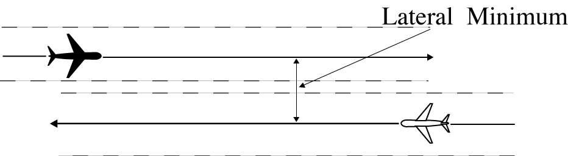
- When reduced route protected airspace is applicable, and the protected airspace of the flight paths do not overlap; or (See FIG 8-4-2.)
FIG 8-4-2Separation Methods 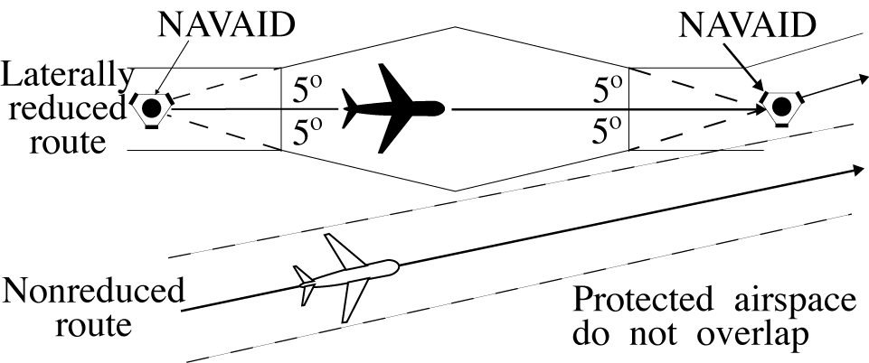
- When aircraft are crossing an oceanic boundary and are entering an airspace with a larger lateral minimum than the airspace being exited; and
- The smaller separation exists at the boundary; and
- Flight paths diverge by 15° or more until the larger minimum is established. (See FIG 8-4-3.)
FIG 8-4-3Separation Methods 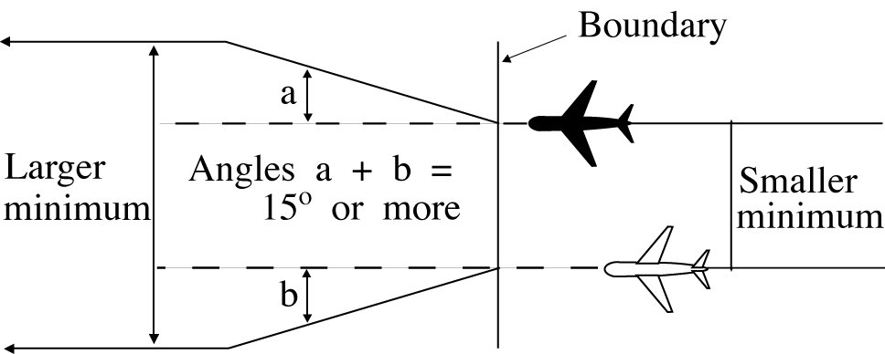
- When the required distance is maintained between the flight paths; or (See FIG 8-4-1.)
- Intersecting flight paths with constant and same width protected airspace when either aircraft is at or beyond a distance equal to the applicable lateral separation minimum measured perpendicular to the flight path of the other aircraft. (See FIG 8-4-4.)
FIG 8-4-4Separation Methods 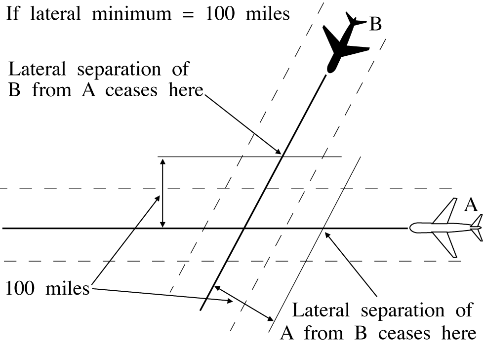
- Intersecting flight paths with constant but different width protected airspace when either aircraft is at or beyond a distance equal to the sum of the protected airspace of both flight paths measured perpendicular to the flight path of the other aircraft. (See FIG 8-4-5.)
FIG 8-4-5Separation Methods 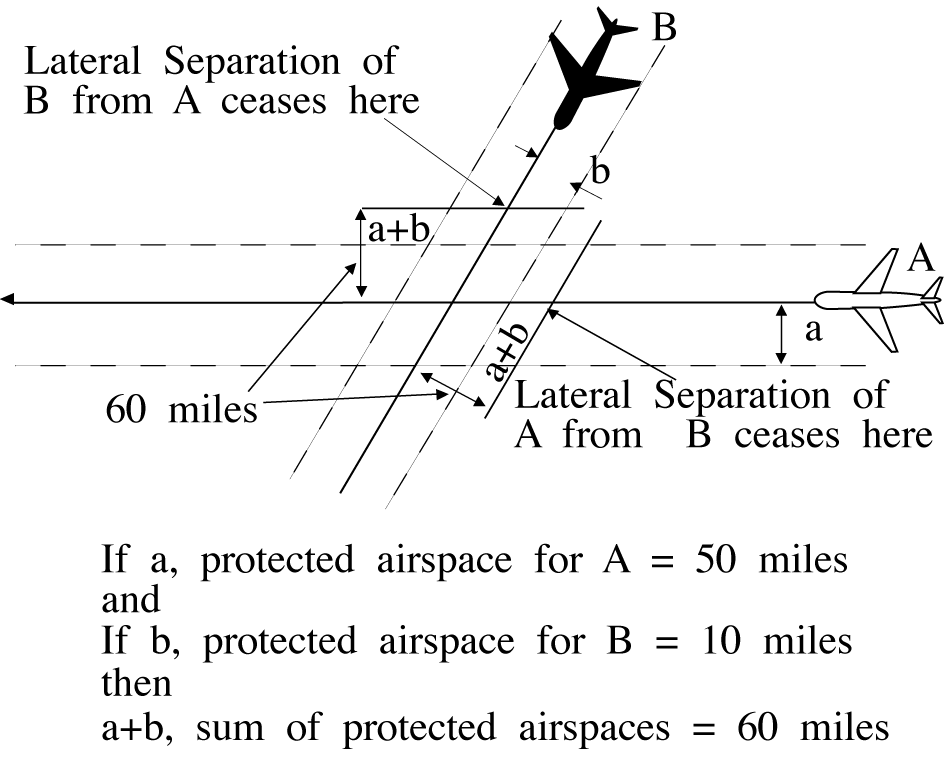
- Intersecting flight paths with variable width protected airspace when either aircraft is at or beyond a distance equal to the sum of the protected airspace of both flight paths measured perpendicular to the flight path of the other aircraft. Measure protected airspace for each aircraft perpendicular to its flight path at the first point or the last point, as applicable, of protected airspace overlap.
FIG 8-4-6Separation Methods 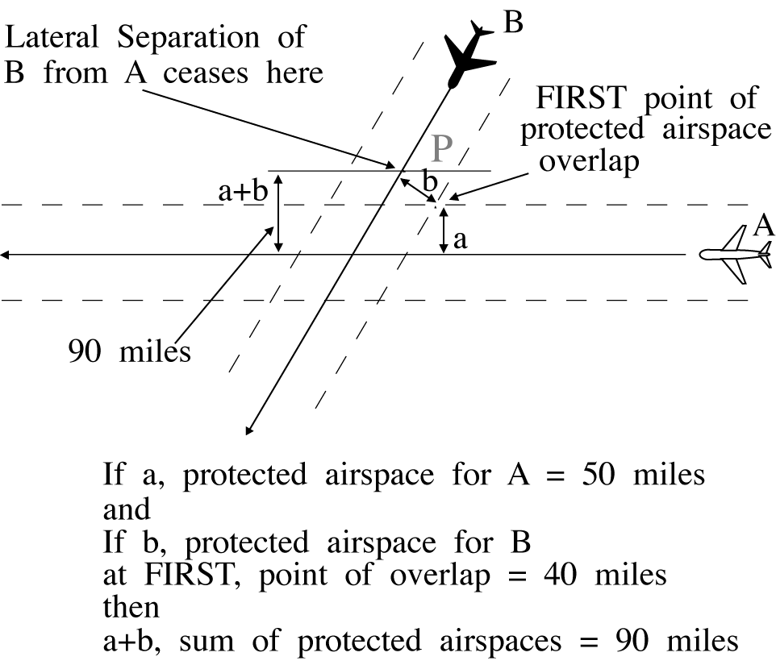
FIG 8-4-7Separation Methods 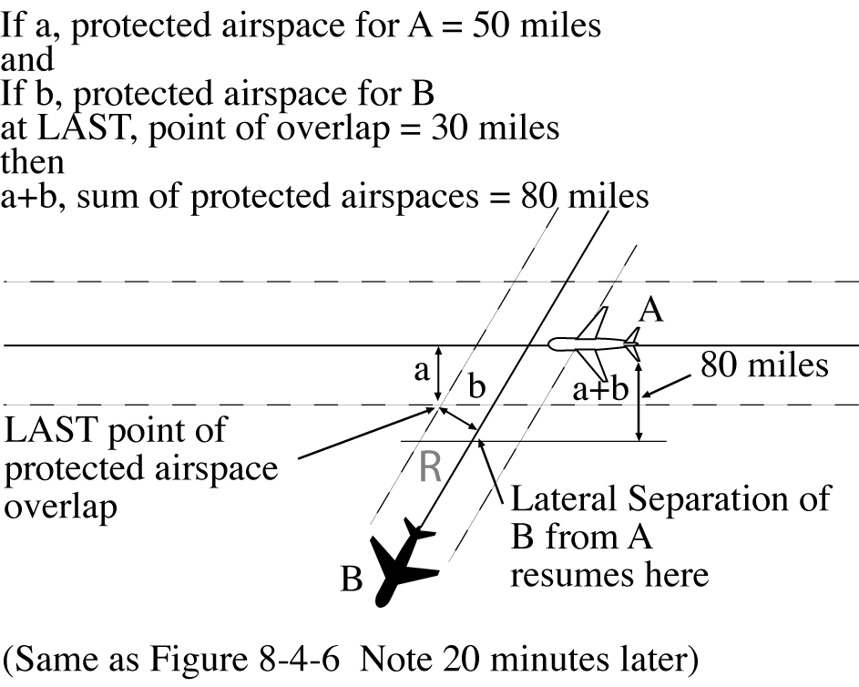
8-4-3. REDUCTION OF ROUTE PROTECTED AIRSPACE
When routes have been satisfactorily flight checked and notice has been given to users, reduction in route protected airspace may be made as follows:
- Below FL 240, reduce the width of the protected airspace to 5 miles on each side of the route centerline to a distance of 57.14 miles from the NAVAID, then increasing in width on a 5° angle from the route centerline, measured at the NAVAID, to the maximum width allowable within the lateral minima; for example, 50 miles of protected airspace on each side of centerline; i.e., a lateral minimum of 100 miles. (See FIG 8-4-8.)
FIG 8-4-8Reduction of Route Protected Airspace - At and above FL 240, reduce the width of the protected airspace to 10 miles on each side of the route centerline to a distance of 114.29 miles from the NAVAID, then increasing in width on a 5° angle from the route centerline, as measured at the NAVAID, to the maximum width allowable within the lateral minima; for example, 60 miles of protected airspace on each side of the centerline; i.e., a lateral separation minimum of 120 miles. (See FIG 8-4-9.)
FIG 8-4-9Reduction of Route Protected Airspace 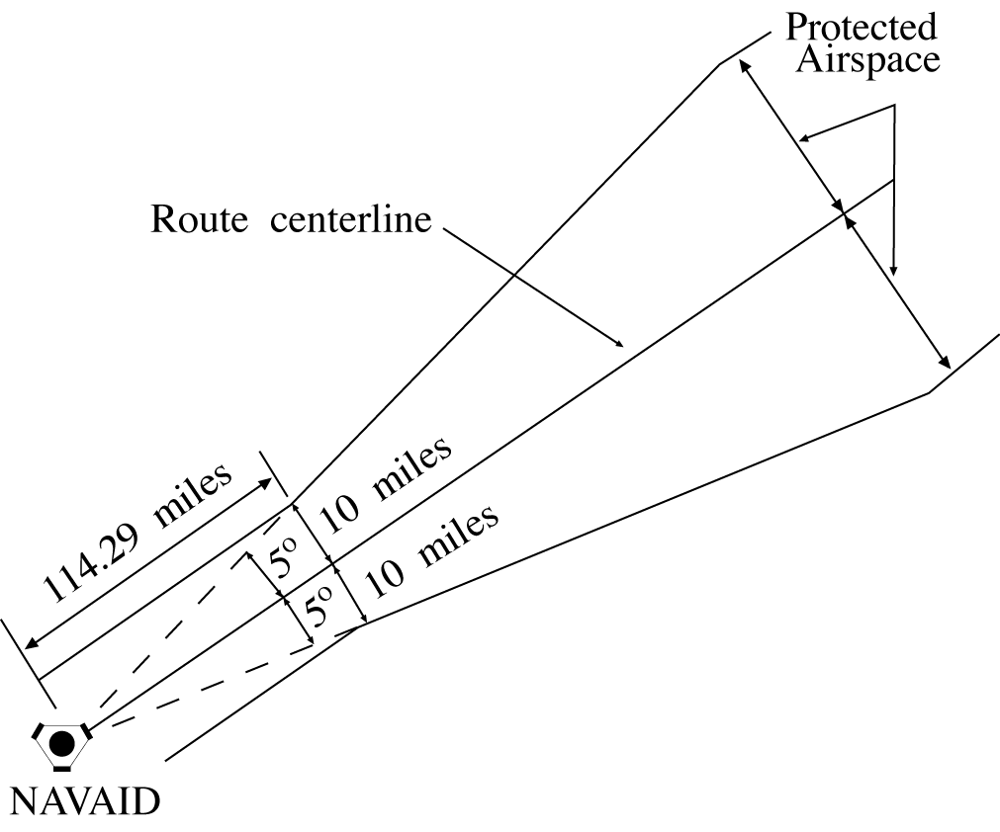
8-4-4. TRACK SEPARATION
Apply track separation between aircraft by requiring aircraft to fly specified tracks or radials and with specified spacings as follows:
- Same NAVAID:
- VOR/VORTAC/TACAN. Consider separation to exist between aircraft established on radials of the same NAVAID that diverge by at least 15 degrees when either aircraft is clear of the airspace to be protected for the other aircraft. Use TBL 8-4-1 to determine the flight distance required for various divergence angles and altitudes to clear the airspace to be protected. (See FIG 8-4-10.)
TBL 8-4-1Divergence‐Distance Minima VOR/VORTAC/TACAN Distance (mile)
Divergence (degrees)
FL 230 and below
FL 240 through
FL 45015-25
17
18
26-35
11
13
36-90
8
11
Note: This table compensates for DME slant range error.
FIG 8-4-10Track Separation VOR 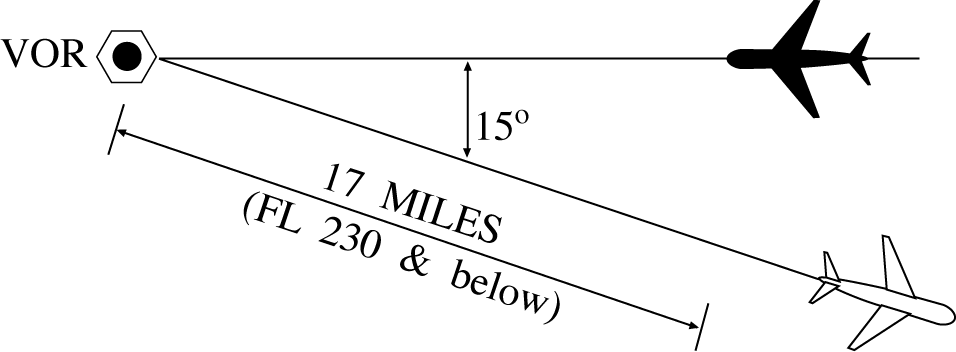
- NDB:
- Consider separation to exist between aircraft established on tracks of the same NAVAID that diverge by at least 30 degrees and one aircraft is at least 15 miles from the NAVAID. This separation must not be used when one or both aircraft are inbound to the aid unless the distance of the aircraft from the facility can be readily determined by reference to the NAVAID. Use TBL 8-4-2 to determine the flight distance required for various divergence angles to clear the airspace to be protected. For divergence that falls between two values, use the lesser value to obtain the distance. (See FIG 8-4-11.)
TBL 8-4-2Divergence‐Distance Minima (NDB) Distance (mile)
Divergence (degrees)
FL 230 and below
FL 240 through
FL 45030
15
17
45
13
14
60
9
10
75
7
8
90
6
7
Note: This table compensates for DME slant range error.
FIG 8-4-11Track Separation NDB 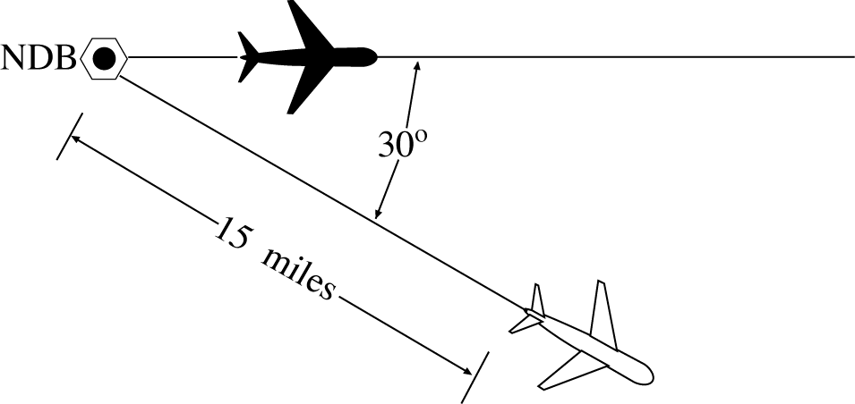
- Clear aircraft navigating on NDB facilities in accordance with paragraph 2-5-2, NAVAID Terms.
- Consider separation to exist between aircraft established on tracks of the same NAVAID that diverge by at least 30 degrees and one aircraft is at least 15 miles from the NAVAID. This separation must not be used when one or both aircraft are inbound to the aid unless the distance of the aircraft from the facility can be readily determined by reference to the NAVAID. Use TBL 8-4-2 to determine the flight distance required for various divergence angles to clear the airspace to be protected. For divergence that falls between two values, use the lesser value to obtain the distance. (See FIG 8-4-11.)
- VOR/VORTAC/TACAN. Consider separation to exist between aircraft established on radials of the same NAVAID that diverge by at least 15 degrees when either aircraft is clear of the airspace to be protected for the other aircraft. Use TBL 8-4-1 to determine the flight distance required for various divergence angles and altitudes to clear the airspace to be protected. (See FIG 8-4-10.)
- Different NAVAIDs: Separate aircraft using different navigation aids by assigning tracks so that their protected airspace does not overlap. (See FIG 8-4-12.)
FIG 8-4-12Track Separation 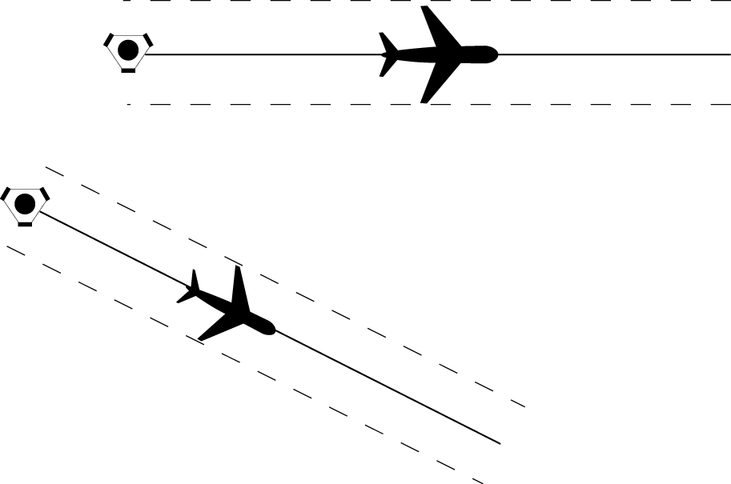
- Dead Reckoning (DR):
- Consider separation to exist between aircraft established on tracks that diverge by at least 45 degrees when one aircraft is at least 15 miles from the point of intersection of the tracks. This point may be determined either visually or by reference to a ground-based navigation aid. (See FIG 8-4-13.)
FIG 8-4-13Track Separation 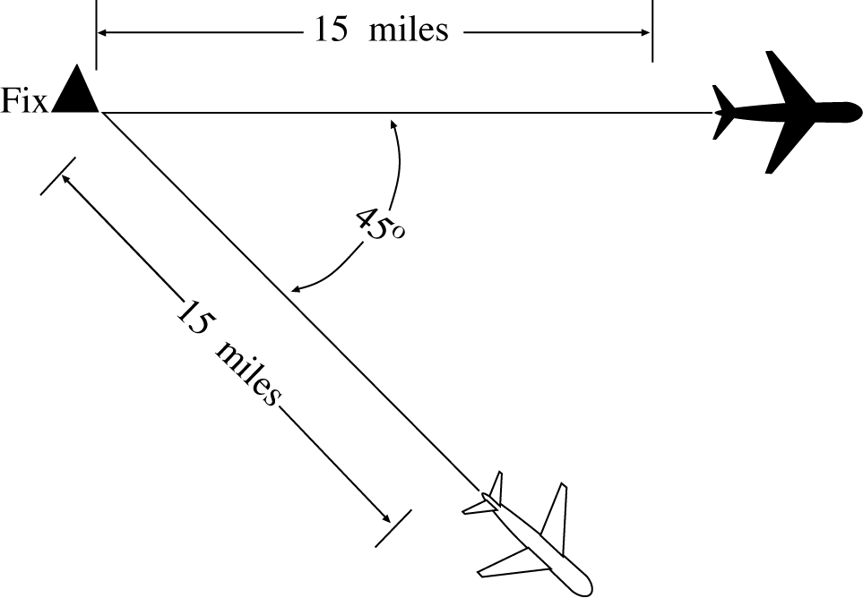
- Consider separation to exist between aircraft established on tracks that diverge by at least 45 degrees when one aircraft is at least 15 miles from the point of intersection of the tracks. This point may be determined either visually or by reference to a ground-based navigation aid. (See FIG 8-4-13.)